Steelworks Shopdrawings (SW)
Verkstadsritningar för smide
En öppen skill som låter Claude (eller en annan kodagent) rita smide och plåt i FreeCAD åt dig. Du beskriver vad du vill ha på vanlig svenska – med en mening, några foton, ett mail eller en befintlig ritning – och får tillbaka klassiska tillverkningsritningar, DXF till laser och kantpress, 3D-bilder och ett mängdunderlag. Allt körs i molnet, så telefonen räcker.
Vi testar fortfarande och vill gärna ha dina förslag. Blir något fel, saknas något eller har du en idé: hör av dig till Richard.
Richard Lundgren, Lundgrens Smide AB richard@smide.com 08-684 118 15
Exempel: från underlag till ritning
Tre riktiga uppdrag (kunduppgifter borttagna) och ett exempel från bara text. Allt till höger är gjort av skillen, med de prompter som står under underlaget.
1. Ett foto av konstruktörens ritning → från 2D till 3D
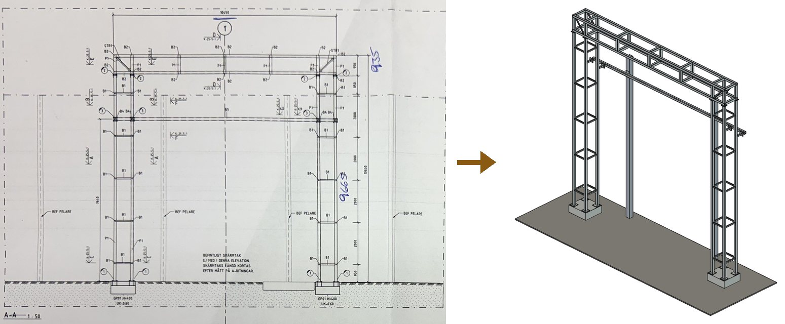
Underlag
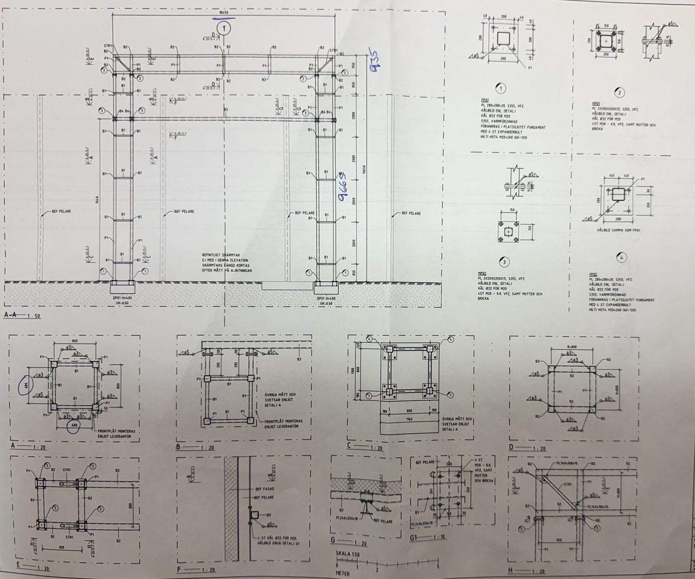
Prompter
Gör en ritning på denna. Den ena visar bara hur håltagning för galvningen behöver göras.
Ta ingen hänsyn till de dit skrivna måtten.
Gör en 3d visualisering som artefakt istället.
Skillen läste måtten och litterorna ur fotot och delade upp överliggaren i tre märken som går att förzinka och frakta: tornen T/1, fackverket F/1 och balken B/1. Den lade in dolda luft- och dräneringshål med storlekarna ur förzinkarens tabell och satte ihop märkena i en modell för att kontrollera att skarvarna passar. Det som inte gick att läsa säkert står som tolkningar i noterna.
Resultat
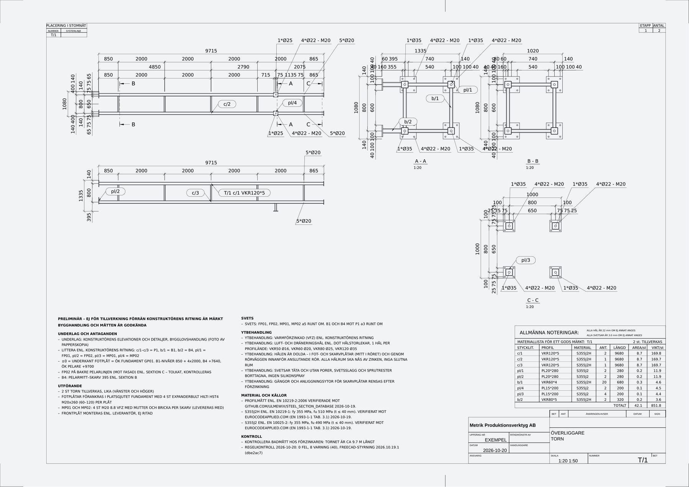
2. Kundens foton och mail → tre räcken, översikt och 3D-bild
Underlag
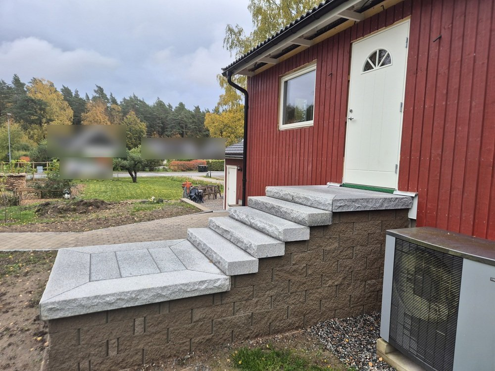
”… 150 cm bred, lite under 4 meter lång och ca 2,6 meter bred på den främre delen.”
ur kundens mail, med två foton av förebilder
Prompter
Se mailet om räcken och grind från kunden och gör en ritning.
Anpassa längderna på sektionerna så att stolparna hamnar mitt under där handledaren vinklas.
Resultat
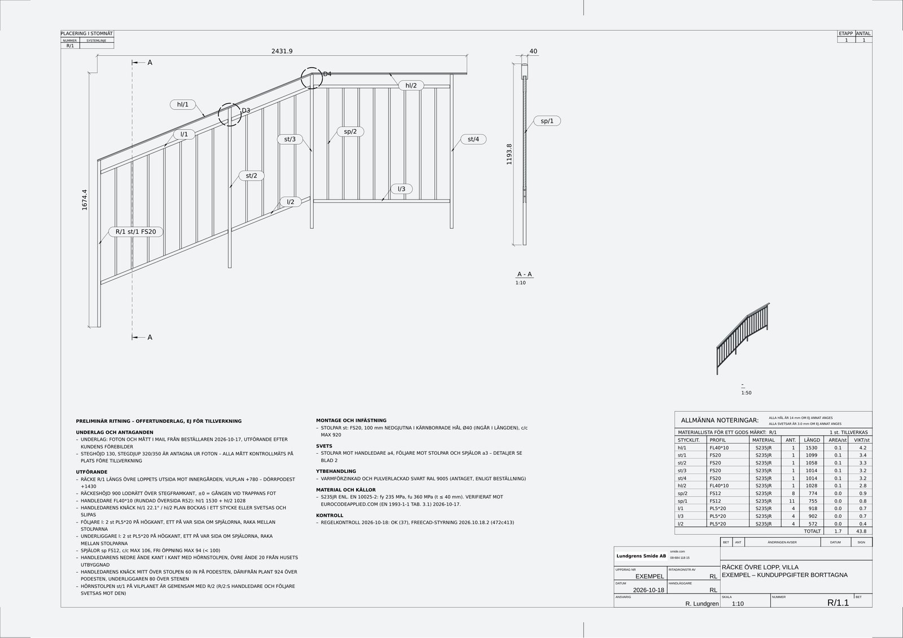
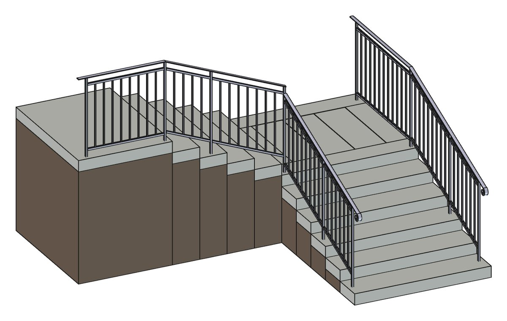
3. Ett foto av stolparna → grind
Underlag
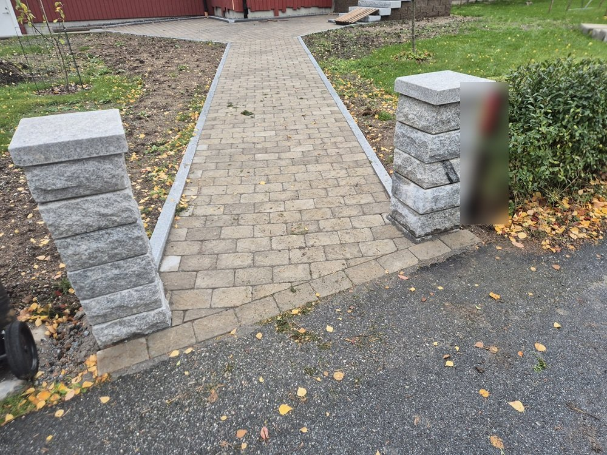
Prompt
Samma prompt som ovan – kunden bad i samma mail om en grind mellan stolparna i räckenas stil.
Resultat
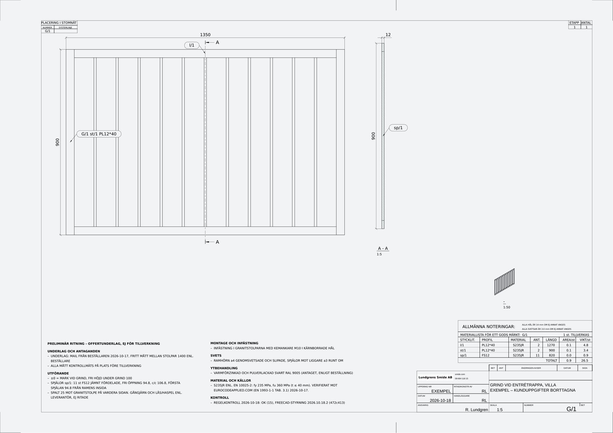
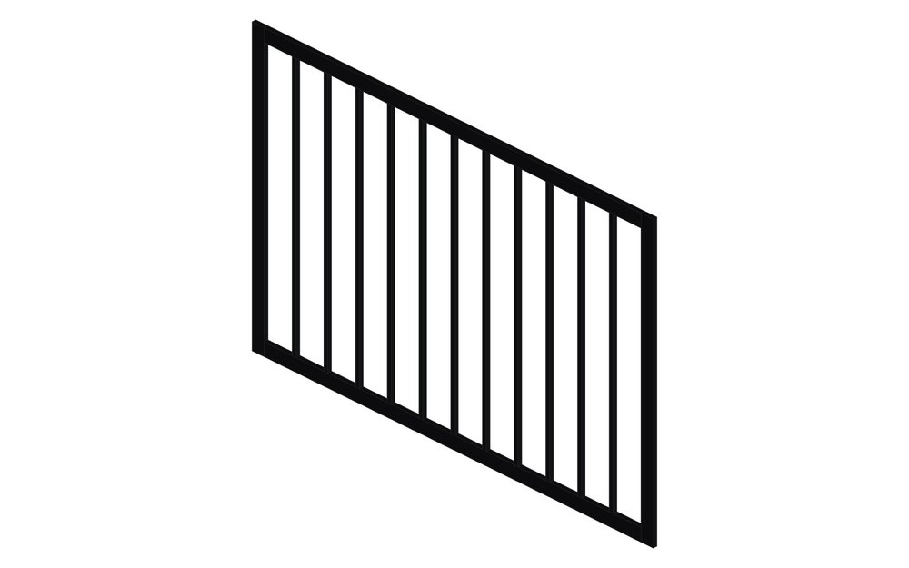
4. Två foton av en elhanddukstork → samma tork i rostfritt, utan värmare
Underlag
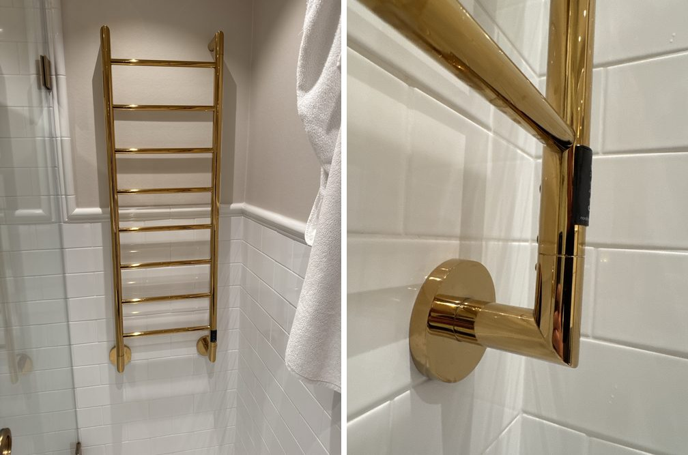
Prompt
Rita denna handdukshängare i rostfritt utan värmare
Skillen hittade förebildens måttskiss hos tillverkaren och frågade bara om storlek och stål (1.4404 spegelpolerat). Godstjockleken står inte i måttskissen och är därför markerad som antagen.
Resultat
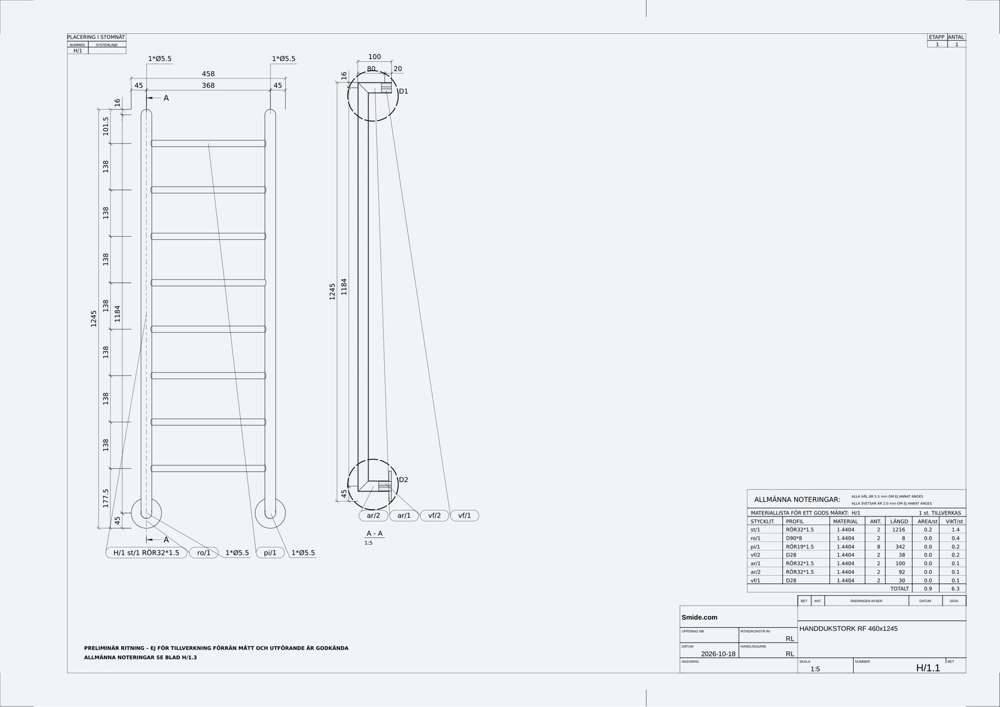
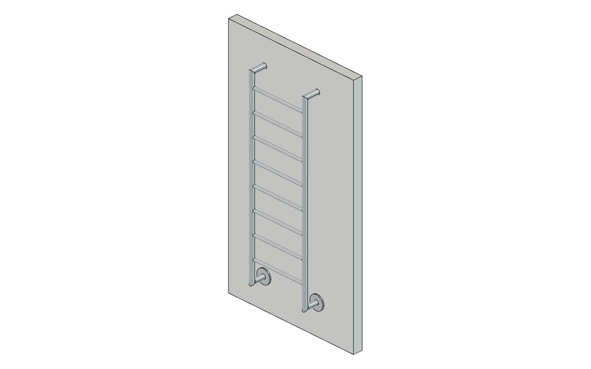
konstruktioner/handdukstork.py.5. Bara text → grind med ornament
Prompt
Rita en grind 1000 bred och 1100 hög med gerad ram i VKR40, nedre fyllning i bockad plåt och en laserskuren solfjäder i mässing upptill. Visa den öppen i 3D.
Det som inte sägs väljer skillen som vanliga mått och skriver dem som antaganden. Bilderna till höger är skillens eget grindexempel, som motsvarar prompten.
Resultat
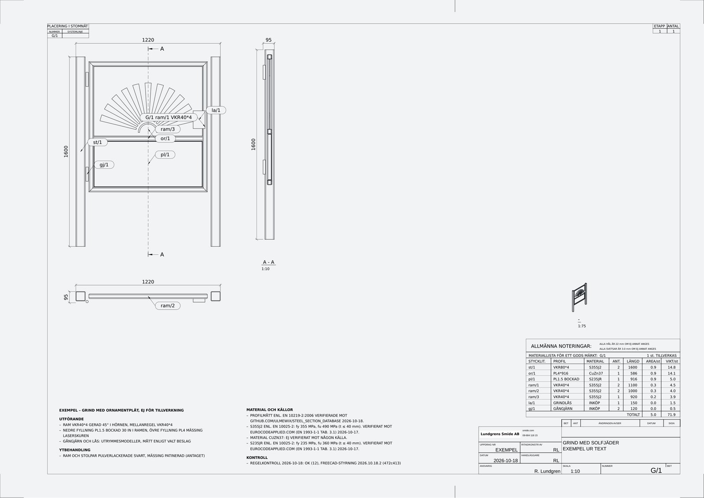
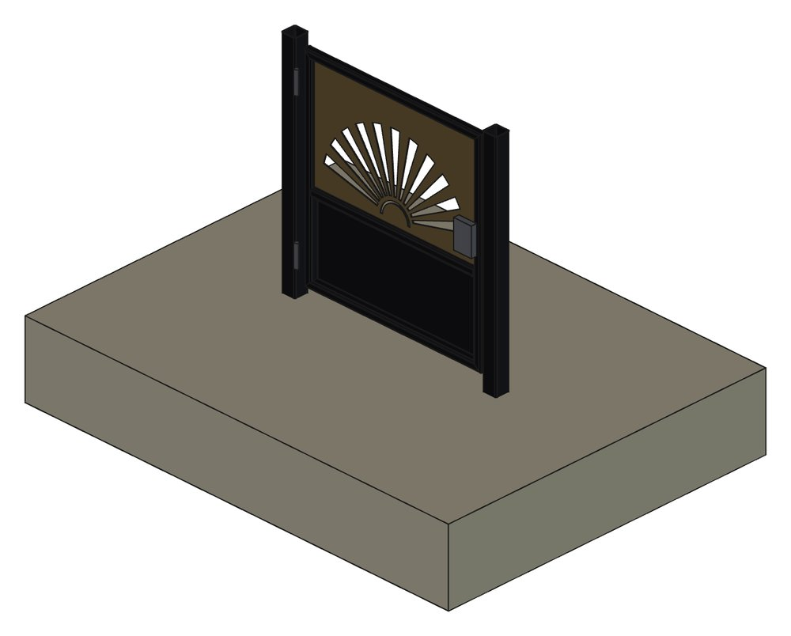
Kom igång: kopiera en prompt
Du behöver ett abonnemang på Claude (Pro eller Max) och ett gratis GitHub-konto. Inget annat behöver installeras.
- Öppna claude.ai/code en gång (i datorn eller telefonens webbläsare) och följ guiden för att koppla GitHub.
- Öppna Claude-appen, gå till Code, välj repot
richalund/Steelworks-shopdrawings(sök på namnet; det är publikt) och starta en ny session. - Kopiera prompten nedan, klistra in den och skicka. Första gången tar installationen 10–15 minuter; sedan går det på sekunder.
Jag vill använda verkstadsskillen freecad-styrning för att rita smide. Läs AGENTS.md och .claude/skills/freecad-styrning/SKILL.md. Kontrollera att FreeCAD är installerat (installationen startar av sig själv första gången; kör annars bash .claude/skills/freecad-styrning/scripts/installera_linux.sh och vänta tills den är klar). Fråga mig sedan om företagsuppgifterna till titelblocket och rita en testgrind, 1000 bred och 1100 hög, så att jag ser att allt fungerar. Stoppas något av nätverksinställningarna: säg exakt vilken domän och vilken inställning jag ska ändra.
Sedan ritar du som vanligt: beskriv vad du vill ha, bifoga foton eller ritningar och be om ändringar tills du är nöjd. Filerna (PDF, DXF, STEP, FreeCAD) laddar du ner ur sessionen. Många filer kommer som en PDF och en zip som du sparar i telefonen, delar som mail eller lägger i din molntjänst; inget av jobbet sparas i repot, som är publikt.
Vill du spara uppdragen i ett eget repo?
Skapa ett eget repo på github.com/new (privat går bra), starta en session i det och klistra in den här prompten. Skillen hämtas från den senaste versionen och installeras i ditt repo.
Installera verkstadsskillen freecad-styrning i det här repot: 1. Hämta https://github.com/richalund/Steelworks-shopdrawings/releases/download/latest/freecad-styrning.zip och packa upp den så att mappen hamnar i .claude/skills/freecad-styrning. 2. Lägg till en SessionStart-hook i .claude/settings.json (slå ihop med det som redan finns) som i molnsessioner kör bash .claude/skills/freecad-styrning/scripts/installera_linux.sh i bakgrunden (async), så att FreeCAD finns i varje ny session. 3. Skapa mappen egna/ och lägg ut/ och egna/foretag.json i .gitignore. 4. Skriv i CLAUDE.md att skillen freecad-styrning används för ritningar, att genererade filer läggs i ut/ och att egna skript och uppgifter läggs i egna/. 5. Kör installationen nu och vänta tills den är klar, fråga mig om företagsuppgifterna och rita en testgrind 1000 x 1100. Committa och pusha på en ny gren och säg vilken version (filen VERSION) som installerades. När jag ber om att uppdatera skillen: gör steg 1 igen.
Skicka underlaget när du är nöjd
Fortsätt prompta tills ritningen och 3D-bilderna visar det du vill ha – det är det underlaget en tillverkare räknar på. Säg sedan att du är nöjd. Claude frågar om underlaget ska mailas till en tillverkare för offert, med en förifylld adress som du kan byta mot vilken som helst. Inget skickas utan att du säger till.
Andra kodagenter
Skillen fungerar i alla kodagenter som kan köra Python. De lämnar resultatet som en gren eller en pull request på
GitHub, så där behöver du en egen privat kopia av repot (en fork av ett publikt repo är publik, och
där ska inga kunduppgifter ligga): gå till github.com/new/import, klistra
in https://github.com/richalund/Steelworks-shopdrawings, ge kopian ett namn, välj Private
och tryck Begin import. Börja sedan med prompten ovan i ditt repo.
Menyerna byter ibland namn mellan versioner av apparna; säg gärna till om något inte stämmer.
OpenAI Codex ChatGPT-appen · ChatGPT Plus eller högre
- Gå till chatgpt.com/codex och koppla GitHub (ge åtkomst till ditt repo).
- Settings → Environments → Create environment, välj ditt repo.
- Under Setup script:
bash .claude/skills/freecad-styrning/scripts/installera_linux.sh
- Under Agent internet access: slå på, välj Common dependencies och lägg till domänerna nedan.
- I ChatGPT-appen: Codex → välj miljön → skriv uppgiften. Be den lägga PDF:er och bilder i
leverans/och skapa en pull request.
GitHub Copilot GitHub-appen · Copilot Pro eller Pro+
- Skaffa Copilot Pro under github.com/settings/copilot.
- I GitHub-appen: Copilot → New session → välj ditt repo → skriv uppgiften.
- Installationen sköts av
.github/workflows/copilot-setup-steps.ymli repot. Läggeurocodeapplied.comoch leverantörers webbplatser i repots Settings → Copilot → Coding agent → brandväggens tillåtna lista.
Cursor Cursor-appen (iOS) eller cursor.com/agents · betalt abonnemang med molnagenter
- Öppna Cursor-appen eller cursor.com/agents och koppla GitHub.
- Starta en ny agent på ditt repo och skriv uppgiften; installationen körs från
.cursor/environment.json. - Be den lägga PDF:er och bilder i
leverans/.
Nätet
I Claude Code räcker standardinställningen (Trusted). Vill du att materialkvaliteterna ska stå som
verifierade på ritningen: lägg till eurocodeapplied.com (molnmiljöns meny i sessionens titelrad →
Edit → Network access). I andra agenter ska de här domänerna vara tillåtna:
github.com release-assets.githubusercontent.com objects.githubusercontent.com raw.githubusercontent.com conda.anaconda.org pypi.org files.pythonhosted.org eurocodeapplied.com
Så räcker abonnemanget längre
- En ny session per jobb. Varje meddelande skickar med hela sessionens historik, så en lång session blir dyrare för varje ändring.
- Samla ändringarna i ett meddelande: "1200 bred, handledare i rör 42, lägg till ett snitt".
- Färre och mindre bilder. Två–tre foton som visar det viktiga räcker.
- Ge måtten du har direkt; det sparar frågor och omtag.
- Se förbrukningen under Inställningar → Användning eller med
/usage.
| Modell | Kostnad mot gränsen | Passar till |
|---|---|---|
| Fable 5.1 | ca 2,5 × Opus | Behövs normalt inte. |
| Opus 5.5 | 1 | Rekommenderas: nya konstruktioner, foton, scannade ritningar. |
| Sonnet 5.5 | ca 0,5 × Opus | Ändringar i en befintlig ritning; prova gärna hela jobb. |
| Haiku 5.5 | ca 0,03 × Opus | Inte testad; troligen bara för enkla ändringar. |
Räknat på listpriserna per ord. Byt modell med modellväljaren eller /model sonnet.
Bra att veta
- Mått hittas aldrig på. Claude frågar, eller skriver tydligt på ritningen vad som är antaget. Kontrollera alltid måtten innan något tillverkas.
- Ritningarna är underlag. Den som tillverkar ansvarar för dimensionering och krav (räckeshöjd, spjälavstånd, CE-märkning).
- Noteringarna grupperas under rubriker (underlag, utförande, svets, ytbehandling …); blir de många hamnar de på ett eget blad, och ett större projekt kan få en gemensam noteringsritning.
Frågor, förslag eller vill du bidra med förbättringar?
Richard Lundgren, Lundgrens Smide AB richard@smide.com 08-684 118 15
Kollegor i branschen är välkomna att använda skillen och skicka in förbättringar (pull requests), se BIDRA.md.